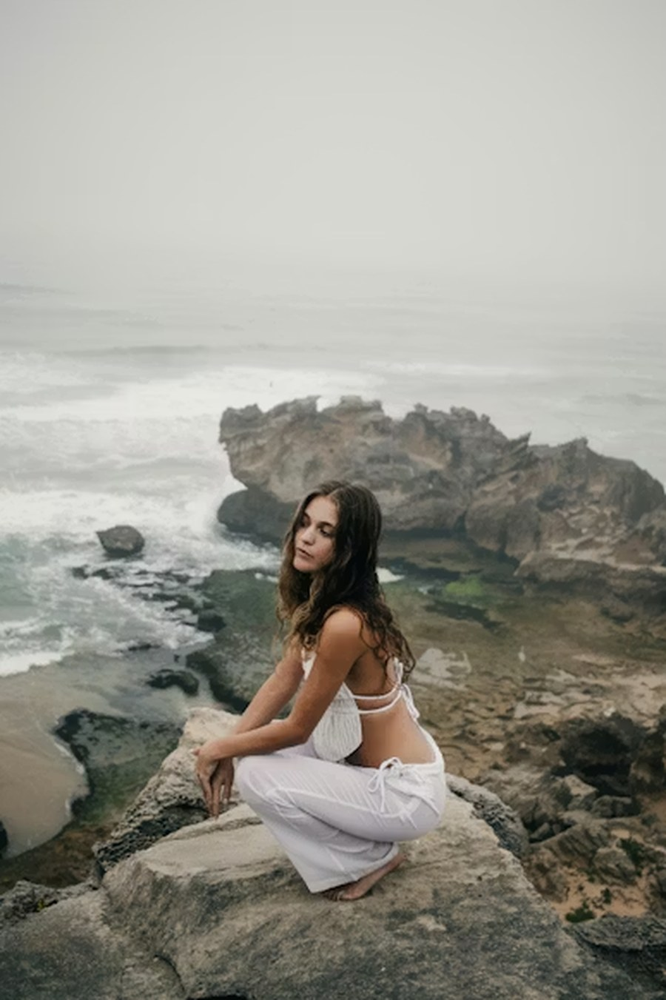

Lead Photographer
Our Story
"Every photo is a dream you can hold."
Digital Dreams Photography was built around one idea — that the camera is a tool for capturing not just what is, but what feels. For over 10 years we have been creating images that blur the line between the real and the imagined.
We work with clients who want more than a photo. They want an experience and art they can keep forever. Whether it is a solo portrait, a couples session, or a full editorial concept, every session starts with your vision and ends with something truly yours.
Every session begins with a detailed consultation so we understand your style and your goals. We scout locations in advance, plan lighting carefully, and stay with you through every step of the editing process until the result is exactly right.
Based In
Portland, Oregon
Experience
10+ Years
Specialty
Fine Art & Portraits
Recognition
6x Award Winner